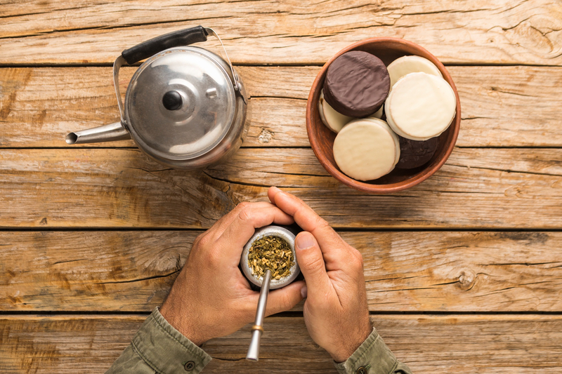

Sobre nosotros
En esta pagina encontraras mucha informacion sobre el mate. Ademas, tambien podras encontrar productos cono mates, bombillas, termos y demas. Estos productos se encuentran en la seccion productos, te invito a que le des una ojeada.
